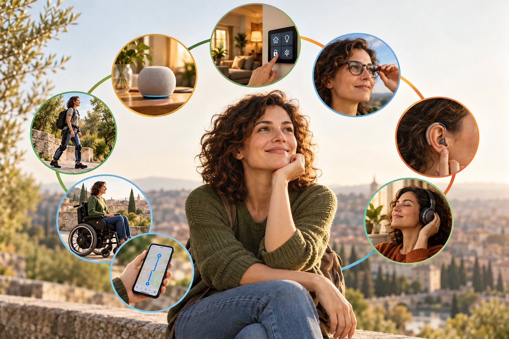

Per molto tempo abbiamo immaginato la tecnologia come qualcosa che rende più comoda la vita: accendere una luce con la voce, aprire una porta senza usare le mani, regolare la temperatura di casa, ricevere un promemoria.
Oggi, però, possiamo aspettarci qualcosa di più.
La tecnologia può diventare un vero supporto all’autonomia, capace di accompagnare la persona non soltanto dentro casa, ma anche fuori: nella mobilità, nella comunicazione, nell’accesso alle informazioni, nella lettura, nell’ascolto, nel lavoro e nelle relazioni.
La domanda, quindi, non è più soltanto: “che cosa sa fare questa tecnologia?”
La domanda giusta diventa:
“quanto può aiutare concretamente una persona a vivere meglio e con maggiore autonomia?”
Da qui può partire una prima carrellata.
La domotica continua a essere uno dei campi più maturi: luci, tapparelle, porte, videocitofoni, termostati, sensori e sistemi di sicurezza possono rendere la casa più accessibile e gestibile anche per chi ha difficoltà motorie o sensoriali.
Gli assistenti vocali e gli smartphone hanno poi reso più semplice comandare dispositivi, fare chiamate, ascoltare messaggi, impostare promemoria o accedere ai contenuti senza usare necessariamente mani e schermo.
Un’evoluzione particolarmente interessante riguarda gli occhiali intelligenti e, più in generale, i dispositivi indossabili. Possono aiutare a leggere testi, riconoscere oggetti, descrivere l’ambiente, ricevere informazioni vocali o supportare la comunicazione.
Sul fronte dell’udito stanno emergendo soluzioni che integrano audio, conduzione ossea, sottotitoli in tempo reale e sistemi di amplificazione. Alcuni prodotti assumono forme sempre più discrete, fino ad avvicinarsi a normali occhiali o auricolari.
Anche la mobilità sta cambiando. Oltre alle carrozzine elettriche evolute e ai sistemi di navigazione assistita, stanno crescendo le sperimentazioni su dispositivi robotici e esoscheletri capaci di sostenere il movimento e accompagnare percorsi riabilitativi o determinate attività quotidiane.
Gli esoscheletri rappresentano bene il cambiamento in corso: non si modifica più soltanto l’ambiente attorno alla persona, ma si cerca anche di offrire un supporto direttamente al corpo e alle capacità residue.
La tecnologia può aiutare anche in modi meno evidenti.
Podcast e audiolibri, per esempio, possono diventare strumenti molto utili per chi ha difficoltà visive, motorie o semplicemente fatica a leggere a lungo. Possono facilitare l’accesso alla cultura, all’informazione e alla compagnia, soprattutto quando possono essere attivati con la voce.
In questo senso, anche una tecnologia comune può trasformarsi in ausilio.
Uno smartphone non nasce come ausilio.
Un assistente vocale non nasce come dispositivo sanitario.
Un podcast non nasce come tecnologia per la disabilità.
Ma tutti questi strumenti, se scelti e utilizzati in funzione di un bisogno reale, possono diventare strumenti di autonomia.
L’intelligenza artificiale rappresenta poi l’elemento trasversale che sta accelerando molte di queste possibilità: riconoscimento delle immagini, traduzione, sintesi vocale, descrizione dell’ambiente, assistenza personalizzata, semplificazione delle informazioni.
Il rischio, però, è quello di confondere la novità con l’utilità.
Non tutto ciò che è tecnologicamente avanzato è automaticamente utile. Alcuni dispositivi sono costosi, altri sono ancora sperimentali, altri ancora possono risultare troppo complessi.
Per questo il principio deve restare chiaro:
prima viene la persona, poi la tecnologia.
Questa prima carrellata serve soprattutto a mostrare quanto si sia allargato oggi il concetto di ausilio.
Nei prossimi approfondimenti potremo entrare nel merito delle singole tecnologie, capire meglio per chi sono realmente utili, quali limiti presentano, quanto costano e quali soluzioni recenti sono effettivamente disponibili sul mercato.
Perché la vera domanda non è quanto sia innovativo un dispositivo.
È un’altra:
quanto riesce davvero a migliorare la vita della persona che lo utilizza?